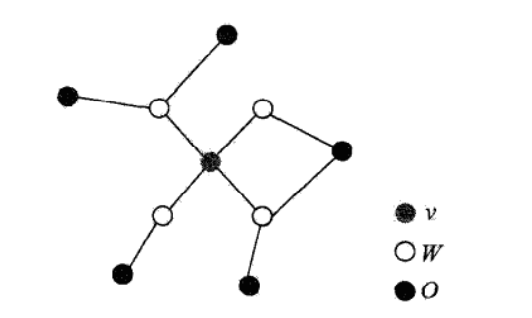
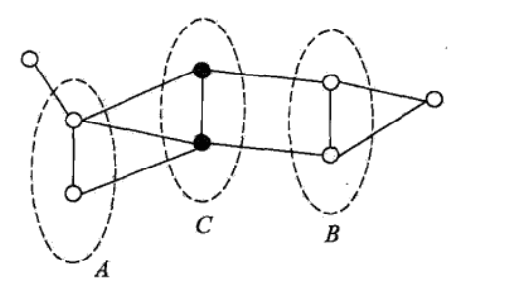
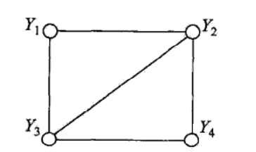

条件随机场(CRF)是给定一组输入随机变量条件下另一组输出随机变量的条件概率分布模型。其特点是假设输出随机变量构成马尔科夫随机场。
本章主要讨论条件随机场在标注问题中的应用，即主要讲述线性链(linear chain)条件随机场。
问题描述:由输入序列对输出序列预测的判别模型，形式为对数线性模型；学习方法：极大似然估计或正则化的极大似然估计。
本章首先介绍概率无向图模型，然后叙述条件随机场的定义和各种表示方法，最后介绍条件随机场的3个基本问题:概率计算问题，学习问题、预测问题。
14.1 概率无向图模型
概率无向图模型(又称为马尔科夫随机场)是一个可以由无向图表示的联合概率分布。
本节首先叙述概率无向图模型的定义，然后介绍概率无向图模型的因子分解。
14.1.1 模型定义
概率图模型是由图表示的概率分布。
设有联合概率分布P(Y)，是一组随机变量。由无向图表示概率分布P(Y)，即在图G中，结点表示一个随机变量，；边表示随机变量之间的概率依赖关系。
给定一个联合概率分布和表示它的无向图G。首先定义无向图表示的随机变量之间存在的成对马尔科夫性、局部马尔科夫性和全局马尔科夫性。
成对马尔科夫性：设u和v是无向图G中任意两个没有边连接的结点，结点u和v分别对应随机变量和。其他所有结点为O，对应的随机变量组是。成对马尔科夫性是指给定随机变量组的条件下，随机变量和是条件独立的，即
局部马尔科夫性：设是无向图G中任意一个结点，W是与v有边连接的所有结点，O是v，W以外的其他所有结点。v表示的随机变量是，W表示的随机变量组是，O表示的随机变量组是。局部马尔科夫性是指在给定随机变量组的条件下，随机变量与随机变量组是独立的。即
在时，等价地，
如下图所示，表示了局部马尔科夫性:

全局马尔科夫性：设结点集合A,B是在无向图G中被结点集合C分开的任意结点集合。全局马尔科夫性是指给定随机变量组条件下随机变量组和是条件独立的，即
如下图所示，结点集合A,B和C所对应的随机变量组分别是，和:

上述成对的、局部的、全局的马尔科夫性定义是等价的。
定义14.1(概率无向图模型) 设有联合概率分布，由无向图G=(V,E)表示，在图G中，结点表示随机变量，边表示随机变量之间的依赖关系。如果联合概率分布P(Y)满足成对、局部或全局马尔科夫性，就称此联合概率分布为概率无向图模型，或马尔科夫随机场。
14.1.2 概率无向图模型的因子分解
定义11.2(团与最大团) 无向图G中任何两个结点均有边连接的结点子集称为团。若C是无向图G的一个团，并且不能再加进任何一个G的节点使其称为一个更大的团，则称此C为最大团。
如下图所示，图中有2个结点组成的团有5个：(1,2),(2,3),(3,4),(4,2)和(1,3)。有2个最大团：(1,2,3)和(2,3,4)。而(1,2,3,4)不是一个团，因为和没有边连接。

将概率无向图模型的联合概率分布表示为其最大团上的随机变量的函数的乘积形式的操作，称为概率无向图模型的因子分解。
给定概率无向图模型，设其无向图为G，C为G上的最大团，表示C对应的随机变量。那么概率无向图模型的联合概率分布P(Y)可写作图中所有最大团C上的函数的乘积形式，即
其中，Z是规范化因子，由式
给出。
规范化因子保证P(Y)构成一个概率分布。函数称为势函数(势函数是严格正的)，通常定义为指数函数:
概率无向图模型的因子分解由下述定理来保证。
定理14.1(Hammersley-Clifford定理) 概率无向图模型的联合概率分布P(Y)可以表示为如下形式：
其中，C是无向图的最大团，是C的结点对应的随机变量，是C上定义的严格整函数，乘积是在无向图所有的最大团上进行的。
14.2 条件随机场的定义与形式
14.2.1 条件随机场的定义
条件随机场是给定随机变量X条件下，随机变量Y的马尔科夫随机场。
线性链条件随机场的条件概率模型P(Y|X)中，Y是输出变量，表示标记序列，X是输入变量，表示需要标注的观测序列。也把标记序列称为状态序列。
学习时，利用训练数据集通过极大似然估计或正则化的极大似然估计得到条件概率模型;
预测时，对于给定的输入序列x，求出条件概率最大的输出序列。
定理14.3(条件随机场) 设X与Y是随机变量，P(Y|X)是在给定X的条件下，Y的条件概率分布。若随机变量Y构成一个由无向图G=(V,E)表示的马尔科夫随机场，即
对任意结点v成立，则称条件概率分布P(Y|X)为条件随机场。式中w~v表示在图G=(V,E)中与结点v有边连接的所有结点w；表示结点v以外的所有结点，为结点v，u与w对应的随机变量。
在定义中并没有要求X和Y具有相同的结构。现实中，一般假设X与Y具有相同的图结构。
定义11.4(线性链条件随机场) 设，均为线性链表示的随机变量序列，若在给定随机变量序列X的条件下，随机变量序列Y的条件概率分布P(Y|X)构成条件随机场，即满足马尔科夫性:
注意：在i=1或n时只考虑单边
则称P(Y|X)为线性链条件随机场。在标注问题中，X表示输入观测序列，Y表示对应的输出标记序列或状态序列。
14.2.2 条件随机场的参数化形式
定理14.2(线性链条件随机场的参数化形式) 设P(Y|X)为线性链条件随机场，则在随机变量X取值为x的条件下，随机变量Y取值为y的条件概率具有如下形式:
其中，
式中，和是特征函数，和是对应的权值。是规范化因子，求和是在所有可能的输出序列上进行的。
式(14.10)和式(14.11)是线性链条件随机场模型的基本形式，表示给定输入序列x，对输出序列y预测的条件概率。
对于是定义在边上的特征函数，称为转移特征，依赖于当前和前一个位置；
对于是定义在结点上的特征函数，称为状态特征，依赖于当前位置。
对于和都依赖于位置，是局部特征函数。
通常，特征函数和取值为1或0；当满足特征条件时取值为1，否则为0.条件随机场完全由特征函数，和对应的权值，确定。
线性链条件随机场为对数线性模型。
14.2.3 条件随机场的简化形式
条件随机场的简化思路：对同一个特征在各个位置求和，将局部特征函数转化为一个全局特征函数，这样就可以将条件随机场写成权值向量和特征向量的内积形式，即条件随机场的简化形式。
首先将转移特征和状态特征及其权值用统一的符号表示。设有个转移特征，个状态特征，，记：
然后，对转移与状态特征在各个位置i求和，记作：
用表示特征的权值，即
于是，条件随机场(14.11)~(14.12)可表示为：
若以w表示权值向量，即
以表示全局特征向量，即
则条件随机场可以写成向量w与F(y,x)的内积形式：
其中，
14.2.4 条件随机场的矩阵形式
假设由式(14.15)~(14.16)给出的线性链条件随机场，表示对给定观测序列x，相应的标记序列y的条件概率。引进特殊的起点和终点状态标记，这时可以通过矩阵形式表示。
对观测序列x的每一个位置i=1,2,…,n+1，定义一个m阶矩阵(m是标记取值的个数)
给定观测序列x，相应标记序列y的非规范化概率可以通过该序列n+1个矩阵适当元素的乘积表示。于是，条件概率是：
其中，为规范化因子，是n+1个矩阵的乘积的(start,stop)元素：
注意，=start与=stop表示开始状态与终止状态，规范化因子是以start为起点stop为终点通过状态的所有路径的非规范化概率之和。
14.3 条件随机场的概率计算问题
条件随机场的概率计算问题是给定条件随机场P(Y|X)，输入序列x和输出序列y，计算条件概率，以及相应的数学期望的问题。
14.3.1 前向-后向算法
对每个指标i=0,1,…,n+1，定义前向向量:
递推公式为
又可表示为
关于表示在位置i的标记是并且到位置i的前部分标记序列的非规范化概率，可取的值有m个，所以是m维列向量。
同样，对每个指标i=0,1,…,n+1，定义后向向量：
又可表示为
关于表示在位置i的标记为并且从i+1到n的后部分标记序列的非规范化概率。
由前向-后向向量定义不难得到：
这里，1是元素均为1的m维列向量。
14.3.2 概率计算
按照前向-后向向量的定义，很容易计算标记序列在位置i是标记的条件概率和在位置i-1与i是标记和的条件概率：
其中，
14.3.3 期望值的计算
利用前向-后向向量，可以计算特征函数关于联合分布P(X,Y)和条件分布P(Y|X)的数学期望。
特征函数关于条件分布P(Y|X)的数学期望是：
其中，
假设经验分布为，特征函数关于联合分布P(X,Y)的数学期望是：
其中，
式(14.34)和式(14.35)是特征函数数学期望的一般计算公式。
对于转移特征，k=1,2,…,，可以将式中的换成；
对于状态特征，可以将式中的换成，表示为，。
根据式(14.31)~(14.35)，对于给定的观测序列x与标记序列y，可以通过一次前向扫描计算及Z(x)，通过一次后向扫描计算,从而计算所有的概率和特征的期望。
14.4 条件随机场的学习算法
14.4.1 改进的迭代尺度法
已知训练数据集，由此可知经验概率分布。可以通过极大化训练数据的对数似然函数来求模型参数。
当是一个由式(14.15)和式(14.16)给出的条件随机场模型时，对数似然函数为
改进的迭代尺度法通过迭代的方法不断优化对数似然函数改变量的下界，达到极大化对数似然函数的目的。
假设模型的当前参数向量为，向量的增量为，更新参数向量为。在每步迭代过程中，改进的迭代尺度法通过依次求解式(14.36)和式(14.37)，得到。(更多推导细节可参考6.3.1节)
关于转移特征的更新方程为
关于状态特征的更新方程为:
这里，T(x,y)是在数据(x,y)中出现所有特征数的总和:
算法14.1(条件随机场模型学习的改进的迭代尺度法)
输入：特征函数,；经验分布
输出：参数估计值；模型。
(1)对所有，取初值
(2)对每一:
(a)当k=1,2,…,时，令是方程
的解。
当k=，=1,2,…,时，令是方程
的解，式中由式(14.38)给出。
(b)更新的值:
(3)如果不是所有都收敛，重复步骤(2)。
在式(14.36)和式(14.37)中，T(x,y)表示数据(x,y)中的特征总数，对不同的数据(x,y)取值可能不同。为了处理这个问题，定义松弛特征:
式中S是一个常数。选择足够大的常数S使得对训练数据集的所有数据(x,y)，成立。这时特征总数可取S。
由式(14.36)，对于转移特征，的更新方程是：
其中，
同样由式(14.37)，对于状态特征，的更新方程是
其中，
以上算法称为算法S。
在算法S中需要使常数S取足够大，这样一来，每步迭代的增量向量会变大，算法收敛会变慢。算法T试图解决这个问题。算法T对每个观测序列x计算其特征总数最大值T(x):
利用前向-后向递推公式，可以很容易地计算T(x)=t.
关于转移特征参数的更新方程可以写成:
这里，是特征的期望值，。是多项式方程(14.47)唯一的实根，可以用牛顿法求得。从而求得相关的。
关于状态特征的参数更新方程可以写成：
这里，是特征的期望值，，是多项式方程(14.48)唯一的实根，也可以用牛顿法求得。
14.4.2 拟牛顿法
条件随机场模型学习还可以应用牛顿法或拟牛顿法(参考第15章)。对于条件随机场模型：
学习的优化目标函数是：
其梯度函数是
拟牛顿法的BFGS算法如下。
算法14.2(条件随机场模型学习的BFGS算法)
输入：特征函数；经验分布；
输出：最优参数值；最优模型
(1)选定初始点，取为正定对称矩阵，置k=0
(2)计算。若，则停止计算；否则转(3)
(3)由求出
(4)一维搜索：求使得
(5)置
(6)计算，若，则停止计算；否则，按下式求出：
其中，
(7)置k=k+1，转(3)
14.5 条件随机场的预测算法
条件随机场的预测问题是给定条件随机场P(Y|X)和输入序列(观测序列)x，求条件概率最大的输出序列(标记序列)，即对观测序列进行标注。
条件随机场的预测算法是维特比算法（请参考13.4节）
由式(14.19)可得:
于是，条件随机场的预测问题成为求非规范化概率最大的最优路径问题：
这里，路径表示标记序列。其中，
注意，这时只需计算非规范化概率，而不必计算概率，可以大大提高效率。
为了求解最优路径，将式(14.52)写成如下形式：
其中，
是局部特征向量。
以下为维特比算法的说明：
首先求出位置1的各个标记j=1,2,…,m的非规范化概率:
一般地，由地推公式，求出到位置i的各个标记的非规范化概率的最大值，同时记录非规范化概率最大值的路径：
直到i=n时终止。这时求得非规范化概率的最大值为:
及最优路径的终点
由此最优路径终点返回，
求得最优路径。
综上所述，得到条件随机场预测的维特比算法。
算法14.3(条件随机场预测的维特比算法)
输入:模型特征向量F(y,x)和权值向量w，观测序列；
输出:最优路径
(1)初始化
(2)递推。对i=2,3,…,n
(3)终止
(4)返回路径
求得最优路径